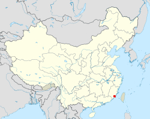

|

Location in China:
24°28′47″N 118°05′20″E
|
Xiamen (Chinese: 厦门; UK: /ʃ(j)ɑːˈmɛn/ sh(y)ah-MEN, US: /-ˈmʌn/ -MUN), alternately known as Amoy (/əˈmɔɪ/, from Hokkien pronunciation [e˨˩ mŋ̍˨]), is a sub-provincial city in southeastern Fujian, People's Republic of China, beside the Taiwan Strait. It is divided into six districts: Huli, Siming, Jimei, Tong'an, Haicang, and Xiang'an. All together, these cover an area of 1,700.61 square kilometers (656.61 sq mi) with a population of 3,531,347 as of 2010. The urbanized area of the city has spread from its original island to include parts of all six of its districts, with a total population of 1,861,289. This area connects to Quanzhou in the north and Zhangzhou in the west, making up a metropolis of more than five million people. The Kinmen Islands (Quemoy) administered by the Republic of China lie less than 6 kilometers (4 mi) away.
Xiamen Island possessed a natural harbor in Yundang Bay, but Fujian's international trade was long restricted to Quanzhou or to Guangzhou in Guangdong. Under the Qing, both before and after the First Opium War, there was a large-scale emigration of Chinese from southern Fujian who spread Hokkien-speaking communities to Singapore, Malaysia, Indonesia and the Philippines. The overseas Chinese continue to support Xiamen's educational and cultural institutions. As part of the Opening Up Policy under Deng Xiaoping, Xiamen became one of China's original four special economic zones opened to foreign investment and trade in the early 1980s. Its former harbor was enclosed using land excavated during the city's expansion, however, the city remains an island connected by bridges to the rest of mainland China.
The city is well known for its mild climate, Hokkien culture and Gulangyu Island, as well as its relatively low pollution. In 2006, Xiamen was ranked as China's second-"most suitable city for living", as well as China's "most romantic leisure city" in 2011.
Xiamen is also one of the top 100 cities in the world by scientific research as tracked by the Nature Index according to the Nature Index 2020 Science Cities. The city is home to several major universities, notably Xiamen University, one of China's most prestigious universities as a member of the Project 985.
|